Reading organic structures
Week 1 · Representations, valence and chemical amount
What should you be able to explain?
Recover implicit atoms; distinguish connectivity; audit charges; convert a supplied mass to amount.
Which view tells you who is bonded?

Which view tells you who is bonded?
Compare the three representations. Which distinguishes ethanol from its ether isomer?
Expand the O–H connection
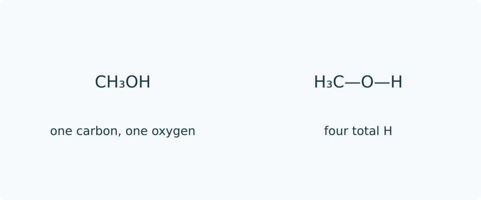
Expand the O–H connection
Methanol has one carbon and one oxygen. Four H atoms appear in its complete formula.
Test identity after redrawing
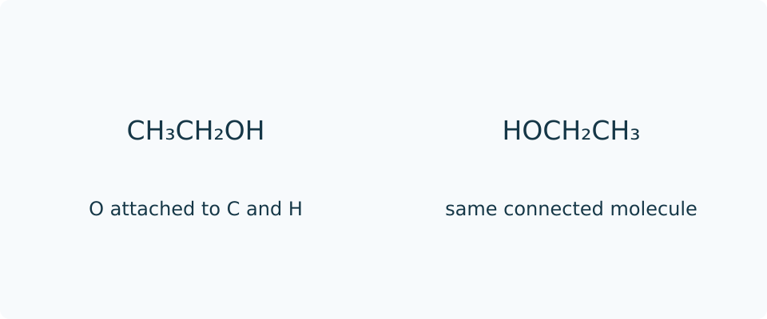
Test identity after redrawing
HOCH₂CH₃ and CH₃CH₂OH have the same oxygen neighbours. Left/right page position is irrelevant.
Locate all five carbons

Locate all five carbons
Trace the pentane line from one end to the other. Count corners as well as endpoints.
Audit a three-carbon chain
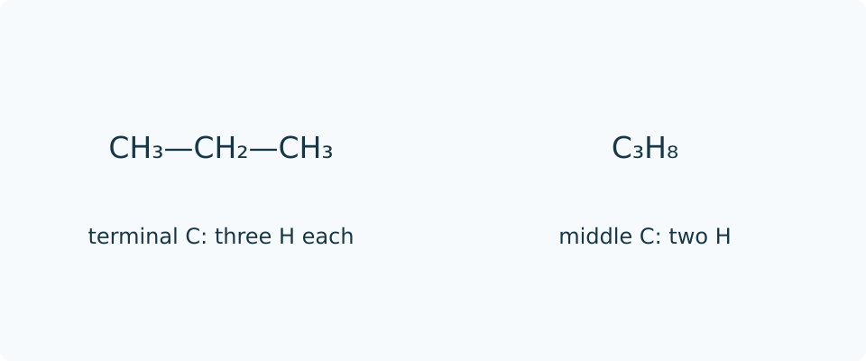
Audit a three-carbon chain
The terminal carbons each carry three H; the middle carbon carries two. Propane is C₃H₈.
A branch is another carbon position
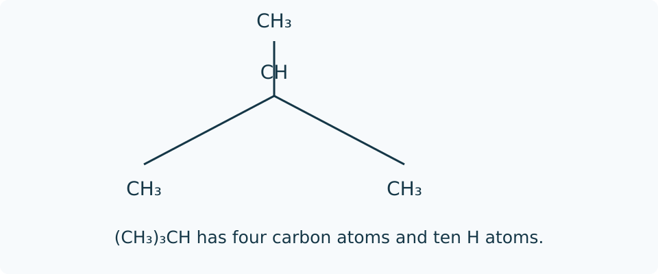
A branch is another carbon position
Count the three terminal methyl groups and the central CH in 2-methylpropane. The formula is C₄H₁₀.
Predict: a four-segment unbranched line
How many carbons and hydrogens does a saturated, unbranched four-segment zigzag represent?
Resolve: segments are bonds
Four segments connect five carbons. The saturated acyclic molecule is pentane, C₅H₁₂, not a four-carbon molecule.
Compare the same two carbons
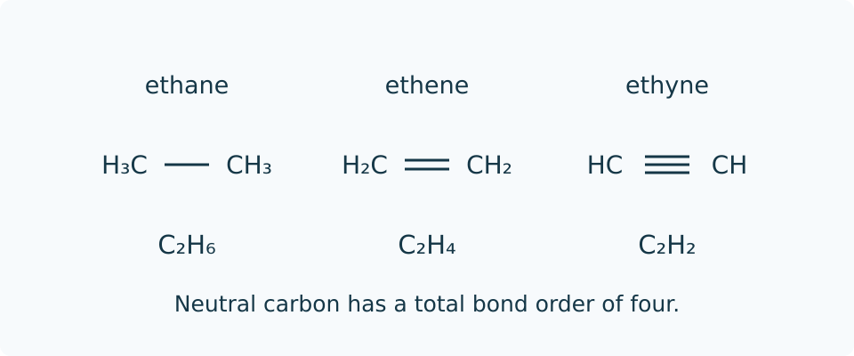
Compare the same two carbons
Why does changing C–C to C=C or C≡C change the permitted hydrogen count?
Audit each alkene carbon
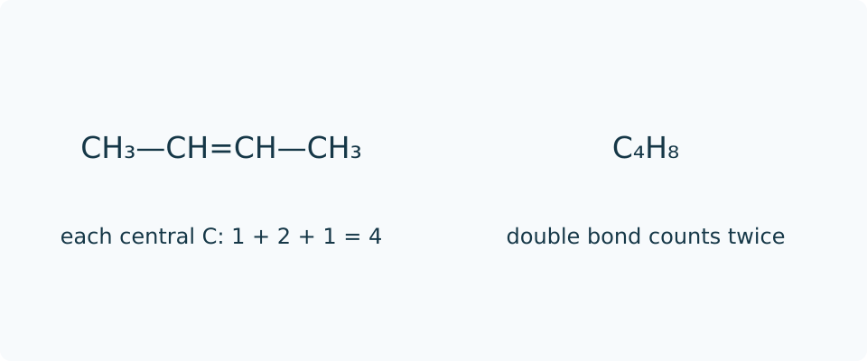
Audit each alkene carbon
In CH₃CH=CHCH₃, each central carbon has one double bond, one single bond and one H.
Use bond-order sum, not neighbour count
Use bond-order sum, not neighbour count
Ethene carbon has three atom neighbours but a bond-order sum of four. A double bond is not one valence.
Read a terminal alkyne
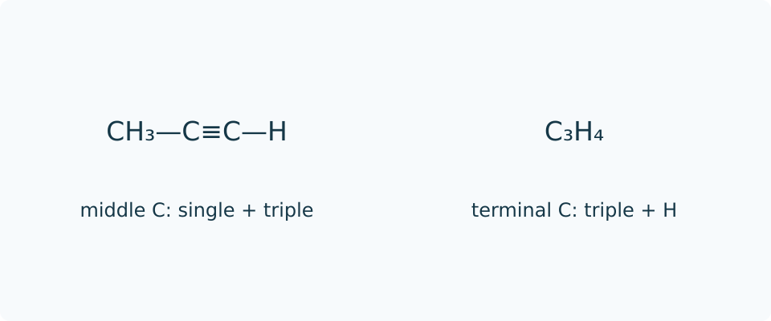
Read a terminal alkyne
CH₃C≡CH has three carbons. Its middle carbon has no H; its terminal alkyne carbon has one.
Predict: one added double bond
Start from C₄H₁₀. Keep the four-carbon acyclic framework and introduce one C=C. What hydrogen formula results?
Name the neighbours that differ

Name the neighbours that differ
For ethanol and dimethyl ether, list the atoms directly connected to oxygen.
Rotate a drawing without changing chemistry
Rotate a drawing without changing chemistry
Redrawing ethanol with OH on the left preserves every bonded neighbour.
A missing vertex is a missing carbon
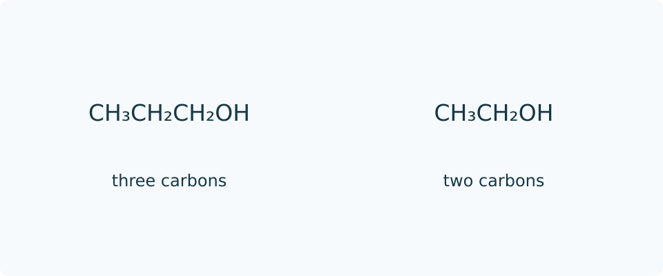
A missing vertex is a missing carbon
Propan-1-ol and ethanol differ by CH₂. A shortened drawing cannot be rescued by calling it another viewing angle.
Find patterns rather than counting oxygen
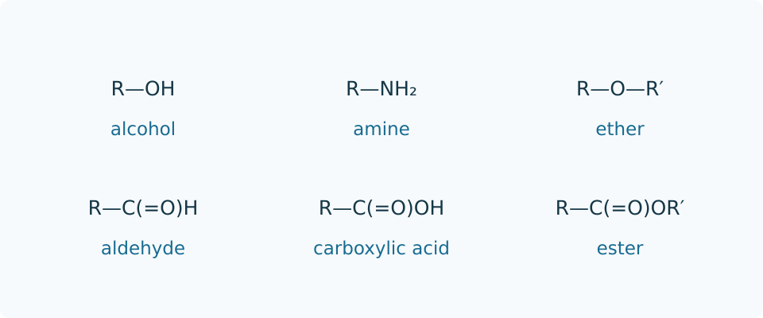
Find patterns rather than counting oxygen
An ether, acid and ester can all contain oxygen. Which local connectivity identifies each family?
Distinguish ether from ester
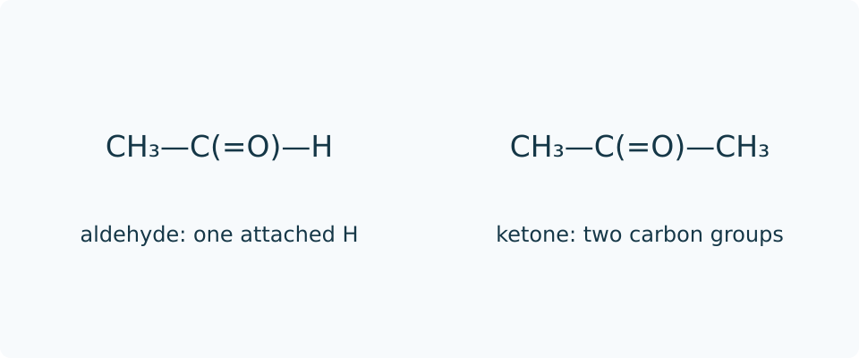
Distinguish ether from ester
An ester has O attached to a carbonyl carbon. A simple ether has no adjacent carbonyl.
Two OH groups are not a carboxylic acid
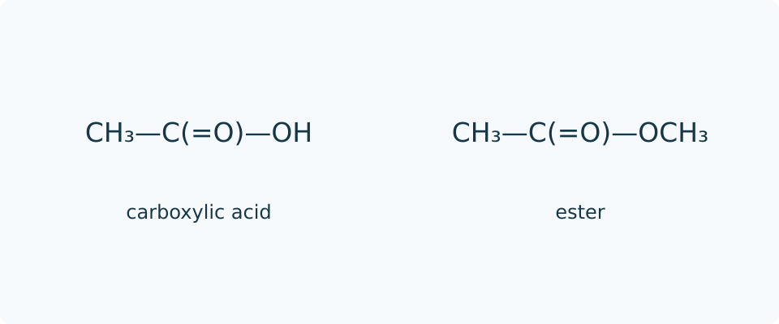
Two OH groups are not a carboxylic acid
HOCH₂CH₂OH is a diol. CH₃C(=O)OH is an acid. Both have two O atoms but different bonding.
Predict: classify CH₃C(=O)NH₂
Identify the carbonyl and its directly attached nitrogen. Is this an amine or an amide?
Resolve: an amide has carbonyl next to N
CH₃CONH₂ is ethanamide. A simple amine such as CH₃CH₂NH₂ lacks that adjacent carbonyl.
Count oxygen electrons, not only bonds

Count oxygen electrons, not only bonds
Compare water, hydroxide and hydronium. Which lone-pair count accompanies each bond count?
Check nitrogen after proton gain
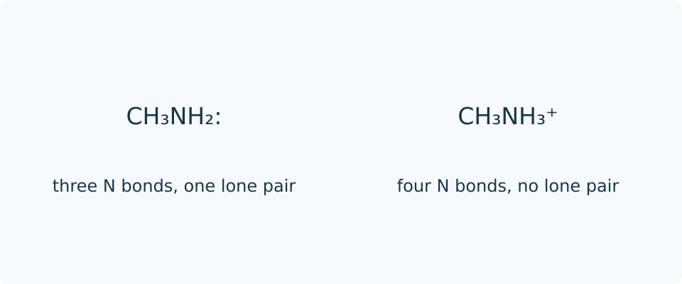
Check nitrogen after proton gain
Three N bonds plus one lone pair gives a neutral ordinary amine. Four bonds gives ammonium, with +1 charge.
Calculate one oxygen charge explicitly

Calculate one oxygen charge explicitly
Hydroxide O: 6 valence electrons − 6 nonbonding electrons − 1 assigned bonding electron = −1.
Track what proton loss changes
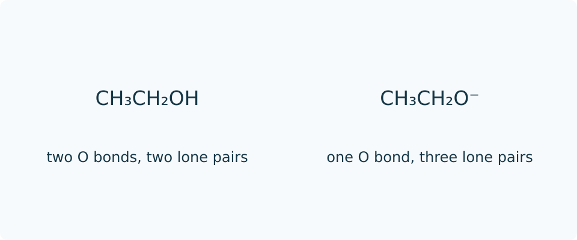
Track what proton loss changes
Ethoxide has one O bond and three lone pairs. Removing H⁺ leaves the original O–H bonding pair on oxygen.
Predict: three bonds and one lone pair on O
Use 6 − nonbonding electrons − half the bonding electrons. What formal charge results?
Resolve: oxygen is positively charged
Three bonds and one lone pair gives 6 − 2 − 3 = +1. Draw the superscript charge; do not silently omit it.
Distinguish geometry from page layout

Distinguish geometry from page layout
Which local geometry corresponds to saturated, alkene/carbonyl and alkyne carbon?
Read a carbonyl H count
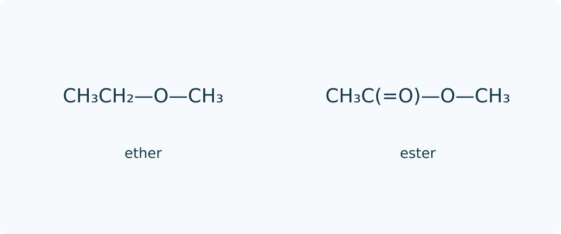
Read a carbonyl H count
Ethanal carbonyl carbon bonds to CH₃, O twice and H once. Propanone instead has two carbon substituents.
Compare acid and ester carbonyl neighbours
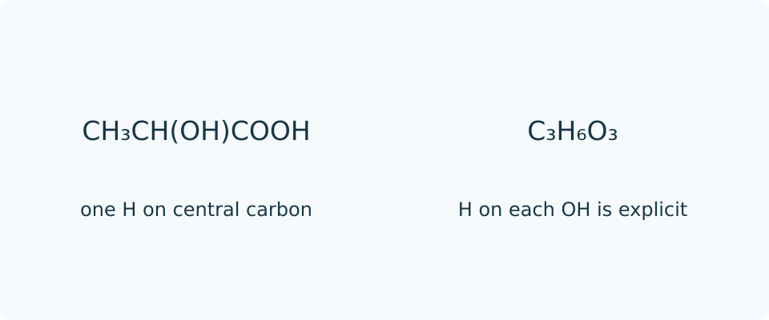
Compare acid and ester carbonyl neighbours
Both carbonyl carbons have approximately planar local geometry; OH versus OR changes the functional group.
Predict: can neutral carbon keep five bond orders?
A proposed intermediate keeps C=O and adds three single bonds at that carbon. Is the representation valid?
Resolve: second-row carbon fails the audit
Two plus three is five bond orders. A valid ordinary tetrahedral intermediate needs the pi bond to open first.
Find the principal group before numbering

Find the principal group before numbering
Trace the longest suitable chain containing the OH-bearing carbon. Then choose numbering consistent with the group.
Redraw propan-1-ol from the opposite end
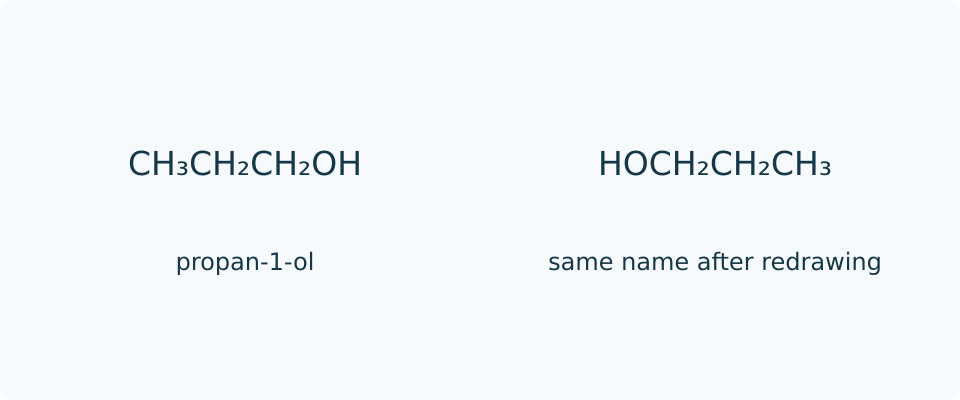
Redraw propan-1-ol from the opposite end
CH₃CH₂CH₂OH and HOCH₂CH₂CH₃ retain the same name and connectivity.
Move the group; change the locant
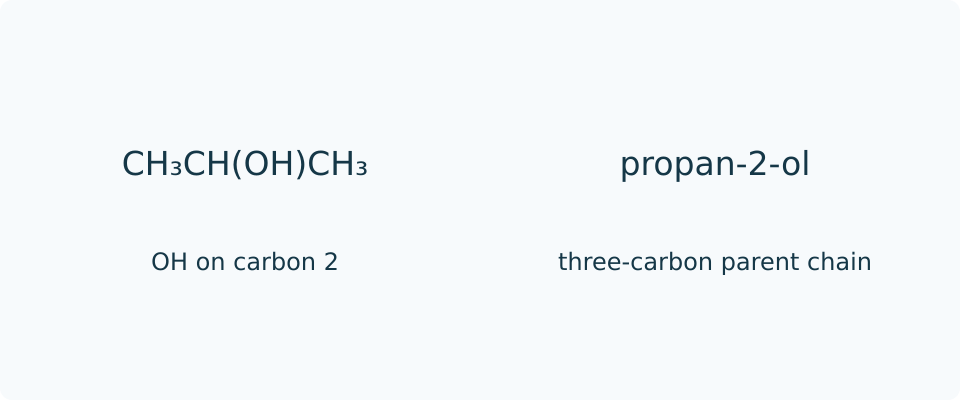
Move the group; change the locant
CH₃CH(OH)CH₃ is propan-2-ol. The OH is attached to the middle carbon.
Predict: name CH₃CH₂CH(OH)CH₃
Number the four-carbon parent chain to give the alcohol its appropriate low locant.
Resolve: butan-2-ol
Counting from the closer end puts OH at C2. Butan-3-ol describes the same connectivity with unsuitable numbering.
Count the acid oxygens separately
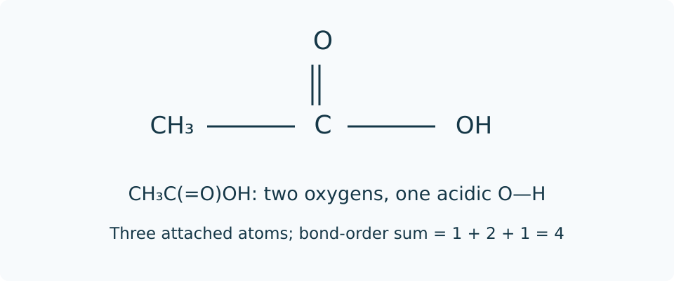
Count the acid oxygens separately
The carbonyl oxygen and hydroxyl oxygen occupy different bonds in CH₃C(=O)OH.
Expand lactic acid carefully
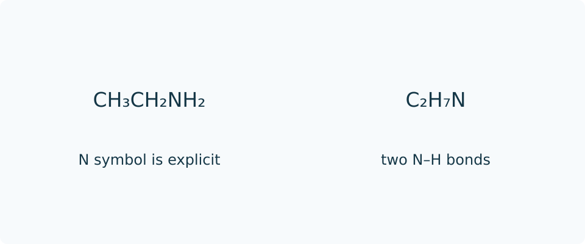
Expand lactic acid carefully
CH₃CH(OH)COOH contains three C, six H and three O. The central carbon has one H, not two.
A biological-looking molecule uses familiar groups
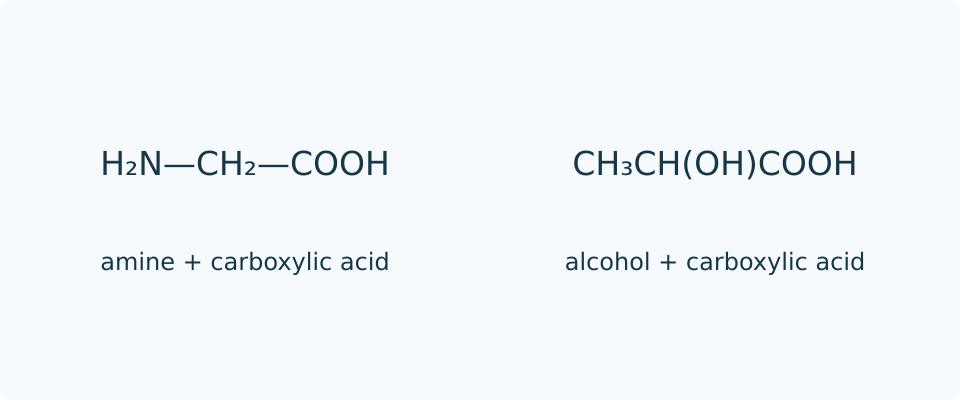
A biological-looking molecule uses familiar groups
Glycine contains an amine and carboxylic acid; lactic acid contains an alcohol and carboxylic acid.
Predict: count H in H₂NCH₂COOH
Count N–H, C–H and O–H separately. Do not add an H to the acid carbonyl carbon.
Resolve: five hydrogens
Two N–H + two C–H + one O–H gives C₂H₅NO₂ for the neutral drawn glycine form.
Connect a measured mass to the mole
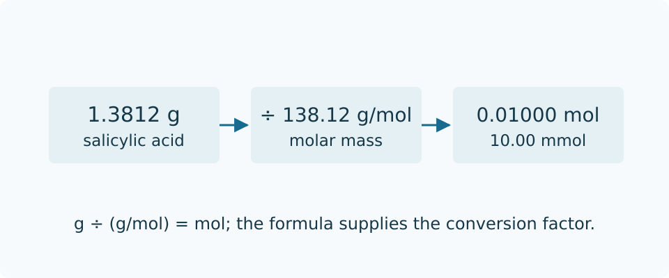
Connect a measured mass to the mole
Which quantity belongs in the denominator when converting grams into moles?
Cancel the units explicitly
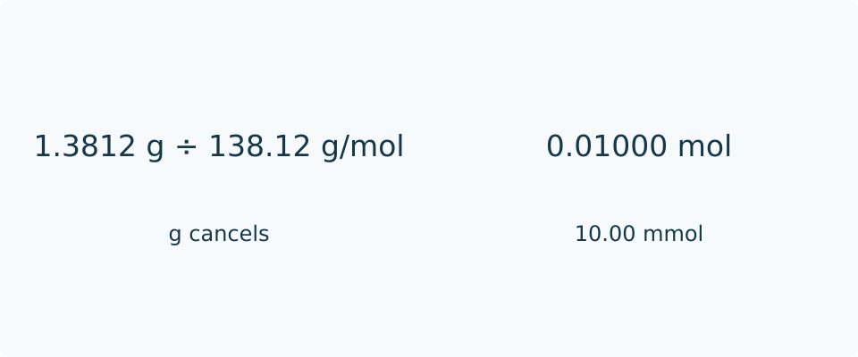
Cancel the units explicitly
1.3812 g ÷ 138.12 g/mol = 0.01000 mol. The grams cancel, leaving mol.
Reverse the calculation
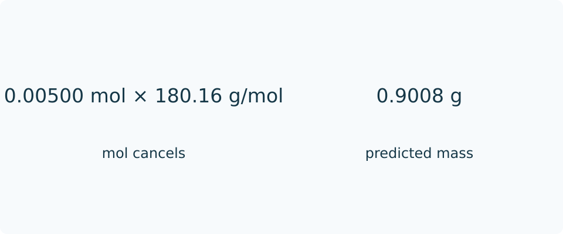
Reverse the calculation
0.00500 mol × 180.16 g/mol = 0.9008 g. The mole units now cancel.
Predict: double the measured mass
At the same molar mass, does doubling mass double or halve chemical amount? State the formula first.
Resolve: amount scales directly with mass
n = m/M. With M fixed, doubling m doubles n. No new chemical assumption is needed.
Your next independent work
Use the exercises, then the self-check. Required core problems and optional transfer work are labelled separately.
One-sentence exit explanation
Write one chemical claim, the feature that supports it and one limit of the inference.
The reading guide provides optional textbook support; no textbook is needed to attempt the local practice.